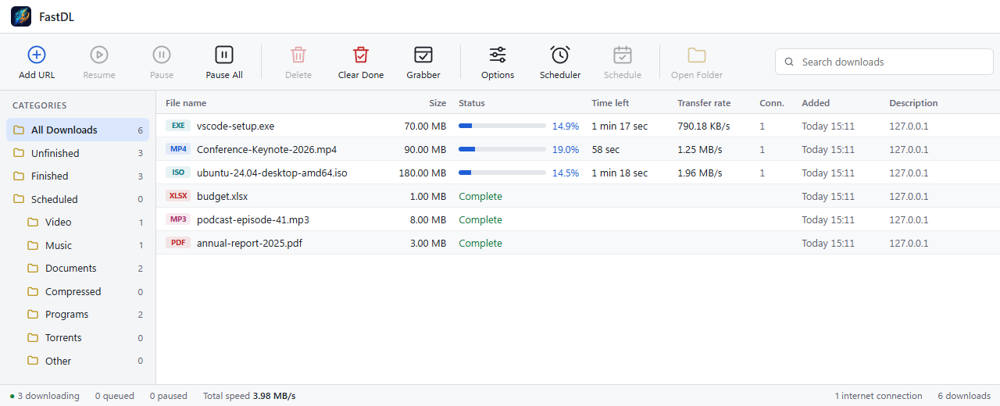
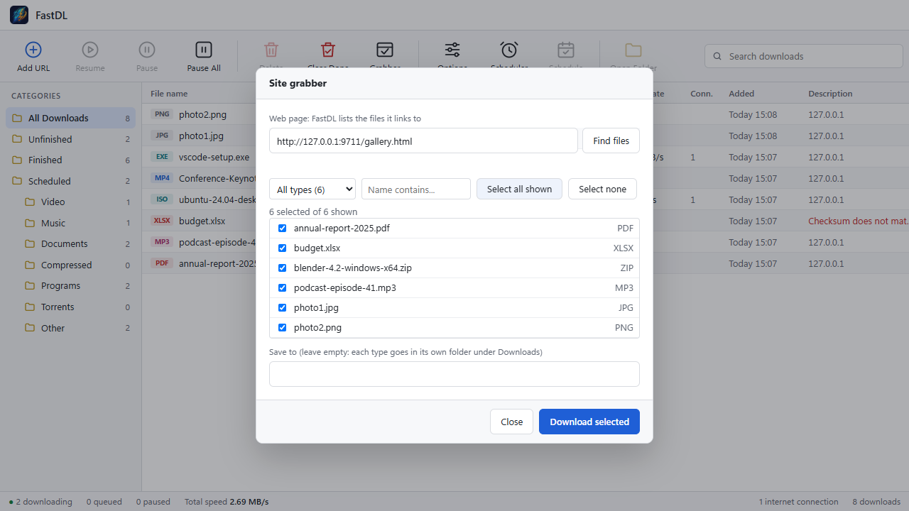

A download manager for Windows that splits every file over many connections at once: files, videos and torrents, with a button in your browser, like IDM.
Download FastDL for Windows All versionsWindows 10 and 11 · no admin rights needed · no ads, no account

FastDL follows your Windows light or dark setting.
Up to 32 connections per file. A connection that finishes takes over half of the biggest part still left, so none sits idle. Pause and resume any time, even after a restart.
YouTube, Bilibili, Dailymotion, OK.ru and about 1,800 other sites. Pick the quality, audio only or subtitles, or Download all.
Magnet links and .torrent files. Choose which files you want before anything downloads.
Hover a video for Download this video. Browser downloads go to FastDL, with a Download File Info window first.
Paste a list of links, one per line, or a pattern like file[01-14].zip. FastDL queues them all, saves them in one folder and runs a few at a time.
Give it a web page and it lists every file the page links to: PDFs, zips, images, videos. Filter by type, tick what you want, download.
Wi-Fi plus Ethernet plus phone tethering, for up to about twice the speed.
Download one file from several servers at the same time.
Start downloads at night and stop them in the morning. Speed limits per download or for everything, changed live.
Paste the MD5, SHA-1, SHA-256 or SHA-512 the site lists. FastDL tells you if the file arrived damaged.
Uses your Windows proxy settings, or set your own (with a user name and password) in Options.
A video link that expires is renewed from its page by itself. For other sites, download the file again and FastDL continues where it stopped.
Lives in the tray, starts with Windows, and updates itself.
FastDL can't download DRM-protected streams (Netflix, Prime Video, Spotify, paid courses) and isn't meant to. Only download what you have the right to.

chrome://extensions (or edge://extensions) and turn on Developer mode.%LOCALAPPDATA%\Programs\FastDL\extension.Download FastDL-Firefox.zip, then in Firefox open about:debugging → This Firefox → Load Temporary Add-on and pick the zip. Firefox forgets temporary add-ons when it closes, until a signed version is published.
Yes. No ads, no account, no paid tier. The source is on GitHub.
No. FastDL runs on your PC only: its window talks to it at 127.0.0.1, and nothing goes anywhere except to the sites you download from (and to GitHub, to check for updates).
Windows warns about every program from a publisher it doesn't know yet. FastDL isn't code-signed, because a signing certificate costs money. The warning isn't a finding about FastDL itself. If you prefer, read or build the source from GitHub.
No. Those streams are DRM-protected and FastDL doesn't bypass that. It works with ordinary files and with videos that can be played without DRM.
Only on servers that allow many connections, and only up to your own internet speed. FastDL starts a few and adds more gradually, and remembers how many each site accepts. Some servers ban clients that open too many, so it backs off by itself.
It updates itself: when a new version is out, an Update button appears at the bottom of the window.